ЛАБОРАТОРНО-ПРАКТИЧНА РОБОТА
Тема: «Техніка вишивки бісером»
Мета: засвоєння техніки вишивки бісером, лелітками, виховувати естетичний смак повагу та любов до традицій українського народу.
Матеріали та інструменти: засвоєння техніки вишивки бісером, лелітками, виховувати естетичний смак повагу та любов до традицій українського народу.
Порядок виконання роботи:
- Ознайомитись з теоретичними відомостями роботи.
- Виконати завдання практичної роботи.
Теоретичні відомості:
Вишивка – широко розповсюджений вид декоративно-прикладного мистецтва. Нашивання на тканину окремих перлин, намистин або нанизаних на нитку перлів, перламутру, бісеру, намистин називалося в давнину сажінням.
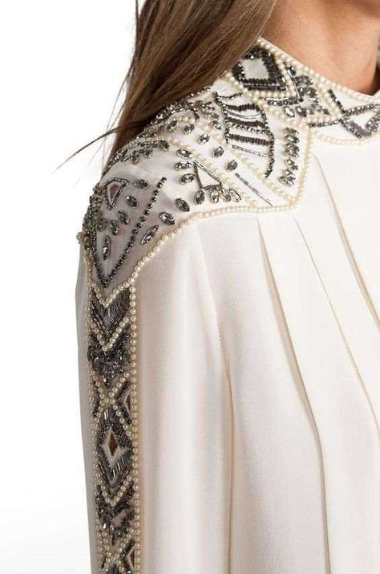 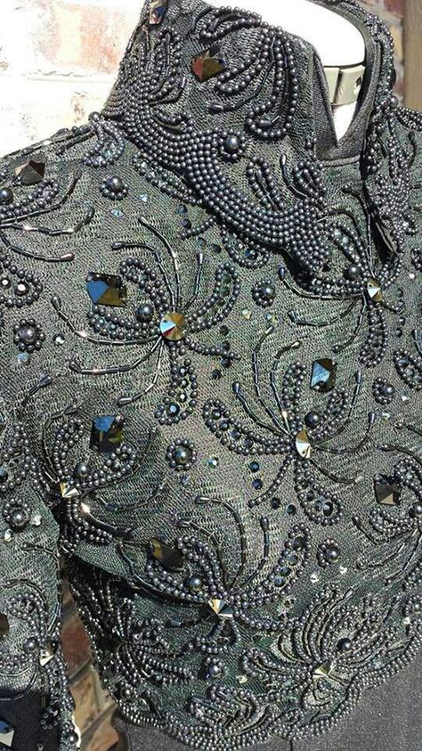 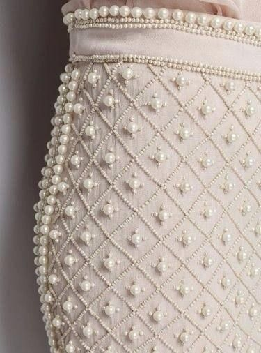
Мал. 33. Одяг вишитий сажінням
Часто у вишивці бісер і намистини поєднуються з іншими матеріалами – кольоровими нитками, лелітками, стразами, шнуром, тасьмою, перламутром, ґудзиками.
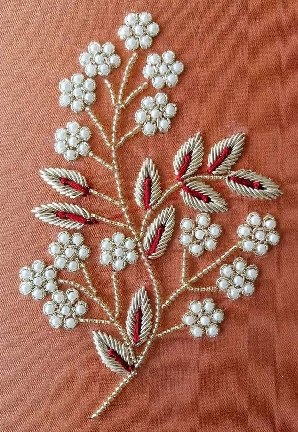
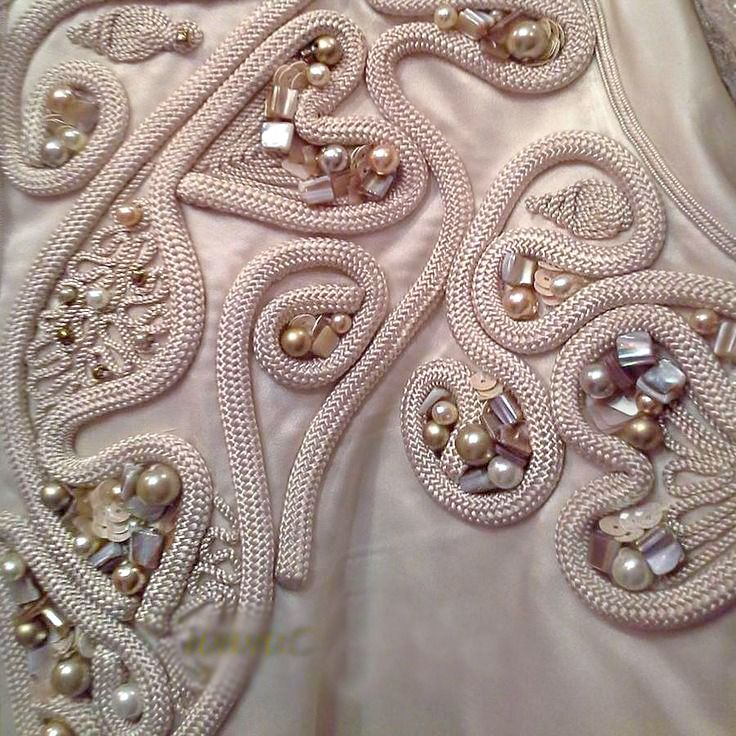
Мал. 33. Вишивка бісером, нитками, шнуром, намистинами
Вибирати матеріали слід особливо ретельно, тому що вишиті речі доведеться чистити, прати і прасувати.
Перед початком роботи переконайтесь в тому, що намистини не розплавляться при прасуванні і відпарюванні, що з них не змиється фарба і не відлущиться перламутр під час прання або чистки. Якщо немає впевненості в якості матеріалу, то краще раніше провести експеримент: піддати намистини всім можливим видам впливу. Це вбереже від можливих розчарувань.
Прозорі намистини малопридатні для вишивання по темному або строкатому фону, так як колір фону забирає колір намистин. Зменшити прозорість намистин можна, пофарбувавши поверхню отворів (по аналогії з парчовим бісером). Для цього протягніть через намистини сувору нитку, свіжопофарбовану густими білилами або іншою світлою фарбою.
Будьте обережні при виборі блискіток у формі зірочок і інших прикрас з гострими кутами або шорсткою поверхнею. Якщо ви зберігаєте речі на поличках шафи або носите взимку, одягаючи під пальто або куртку, то будьте акуратні. Часто блискітки чіпляються і шкодять тканину.
Зазвичай вишивку виконують на п’яльцях. Вони утримують матеріал в розправленому і натягнутому стані. Якщо п’яльці великі для даної роботи, то «наростити» полотно, можна приметавши по краях допоміжні частини тканини. Нитки для нанизування бісеру або намистин при вишивці підбирайте під колір основи.
Практична робота
Виконати вправи:
1. Поодинокі намистини закріплюють на поверхні як ґудзики (мал. 33, а) або за допомогою меншої намистинки (мал. 33, б ).
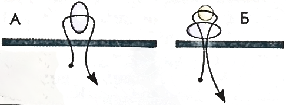
Мал. 33 а,б.
2. Бісерну лінію можна вишити різними способами: на кожному стібку шва розташовується одна бісерина (мал. 34, а). Бісерини в ряду повинні розташовуватись щільно, але не тіснитися, не налазити одна на іншу. Тканина, прикрашена такою вишивкою, не настовбурчується, легко складається. Якщо необхідно, щоб намистинки становили рівну щільну лінію і не відхилялись в різні боки, то, закінчивши ряд, не відрізайте нитку, а протягніть її через виконаний шов (мал. 34, б). Вишивка при цьому стане більш жорсткою.
Рівну щільну лінію дає шов, що нагадує стебловий (мал. 34, в). Виконується цей шов справа наліво. У початковій точці вишивки закріпіть нитку. На неї одягніть дві бісерини, введіть голку в тканину зліва за другою бісериною і виведіть голку між бісеринами. Проведіть голку через другу бісерину, на нитку нанизайте ще одну бісерину, введіть голку в тканину за новою бісериною і виведіть між останньою і передостанньою бісеринами. Проведіть голку через останню бісерину, нанизайте на нитку одну бісерину.
Так і продовжуйте. Бісерини в ряду повинні розташовуватися щільно.
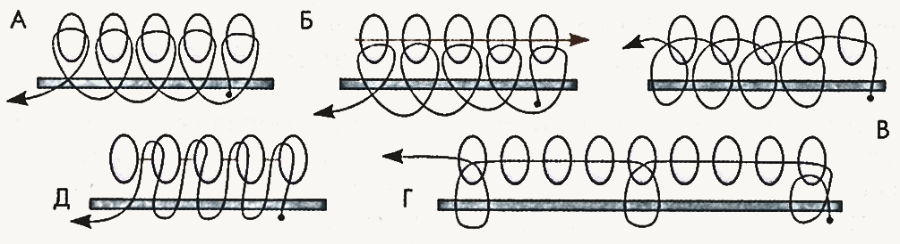
Мал. 34.
Шов буде двостороннім, якщо бісер нанизувати на лінії з лиця і з вивороту. На верхній стороні полотна вийде стебловий шов, на нижній – лінійний (мал. 35).
Виконується цей шов справа наліво так. Закріпіть на полотні нитку. Нанизайте бісерину і введіть голку в тканину зліва від неї. Нанизайте наступну бісеринку (для нижньої сторони шва) і виведіть голку перед першою бісеринкою (мал. 35, а).
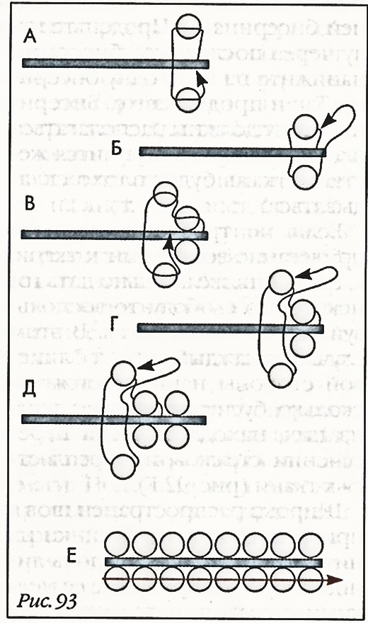
Мал. 35. Двосторонній шов вишитий бісером
Пропустіть голку через першу бісерину (мал. 35, б), на нитку нанизайте одну бісерину і введіть голку в тканину за нею. Нанизайте бісеринку для нижньої сторони шва і виведіть голку (мал. 35, в). Протягніть голку через крайню бісеринку верхнього ряду (мал. 35, г), нанизайте на нитку одну бісерину і повторіть стібок (мал. 35, д). Продовжуйте таким же способом до кінця. Закріпіть нитку, але відразу не відрізайте. На нижній стороні шва бісеринки розташовуються на окремих стібках і можуть бовтатися. Щоб вирівняти лінію, просмикніть нитку через всі бісеринки нижньої сторони (мал. 35, е). Після цього закріпіть нитку, протягніть її через кілька найближчих бісерин і відріжте.
У вишивці бісер часто поєднується з блискітками, лелітками.
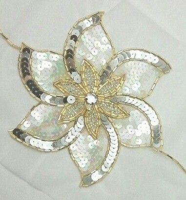
Мал. 36. Вишивка з блискітками
3. Окремо розкладені на тканині блискітки закріплюють бісеринками (мал. 36, а) або стеклярусом (мал. 36, б).
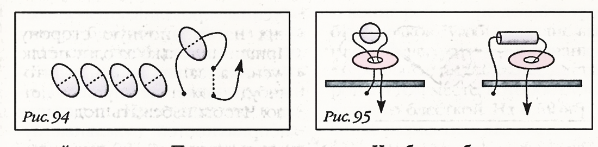
Мал. 36 а,б.
Нанизайте блискітку лицьовою стороною на голку і введіть голку в тканину довжина стібка дорівнює радіусу блискітки. Виведіть голку на відстань радіус блискітки від краю попередньої блискітки з боку стібка і нанизайте наступну лелітку лицьовою стороною на голку. Введіть голку в тканину біля краю попередньої блискітки і так далі. При цьому кожна наступна блискітка прикриває стібок на попередній блискітці. Останню в ряду лелітку закріпіть бісеринкою.
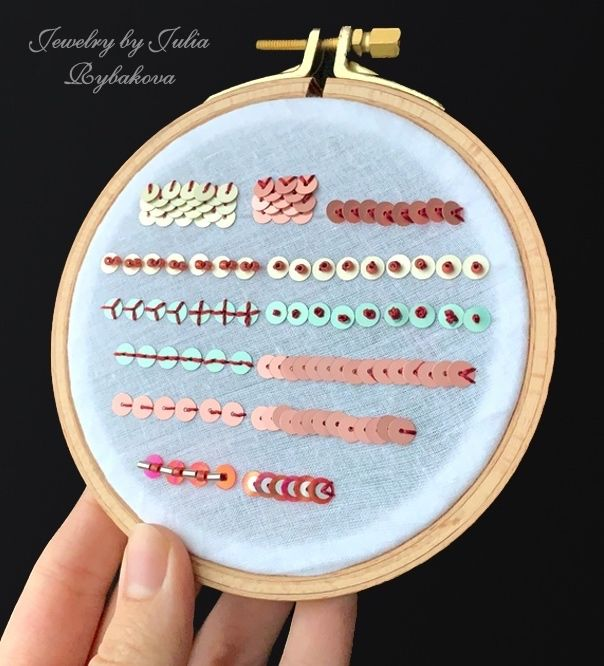
Мал. 37. Способи пришивання блискіток.
Контрольні питання:
- Які існують способи вишивки бісером?
- З чим поєднується вишивка бісером?